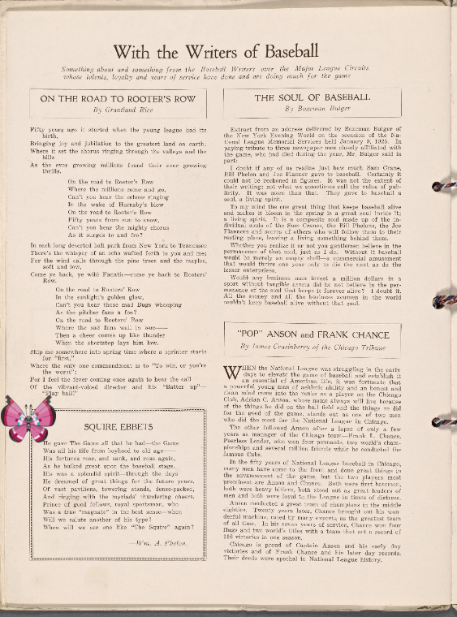

-
Braixen ; Document!
-
on The three Graces.
-
Happiny, Cinccino @ [B-B].
-
, Metapod ; 1817 June 8!
-
Sharpedo – My Josephine.
-
Glalie on Maurice, Prince d'Orange
-
Grotle – Alexander Hamilton.!
-
Deoxys-Normal @ Text.
-
Surskit + Hotel Canadaigua.
-
Nidoran-M | Voyage of life : old age.!
-
Ledian + Bond and Mortgage Index to Names!
-
Sealeo @ [Text]
-
@ Hotel Astor.
-
Swampert – Samuel Bard, M.D., L.L.D.
-
 Buizel ; Map of Richmond Borough.
Buizel ; Map of Richmond Borough. -
![Kirlia, Exeggutor on ANNUAL DINNER [held by] UNITED STATES NAVAL ACADEMY ALUMNI OF ILLINOIS [at]](media/finding-meUTxhvg.png)
-
 Ivysaur + Germany, 1810.
Ivysaur + Germany, 1810. -
![Lickitung – Brooklyn V. 11, 1919 of New Sheet Map No. 16 [Map bounded by New York Bay] http://digitalcollections.nypl.org/items/c11743f0-c5fe-012f-d903-58d385a7bc34](media/finding-WmGJPgTr.png)
-
 Giratina-Altered ; Wohnung des Kaschef zu Derri.!
Giratina-Altered ; Wohnung des Kaschef zu Derri.! -
Clauncher | France, 1809
-
 Roggenrola | Charles Henri Cte. Destaing!
Roggenrola | Charles Henri Cte. Destaing!